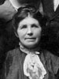
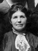

Archibald Waller Overton Buchanan Families
Home
Histories
Charts
Photos
Maps
Restricted
News
Info
Contact
|
|||||||||||||
 


| * | John Lorin Buchanan - 15 Jan. 1879 - 29 July 1880
The 1st child of Archibald W. O. and Caroline Sophia Sorensen |
 | Anna Delilah Buchanan 27 Apr. 1881 - 2 May 1954 Married Robert Poole 5 June 1900 The 2nd child of Archibald W. O. and Caroline Sophia Sorensen |
| Mary Ann Buchanan 7 Sep. 1883 - 11 Feb. 1955 Married Joseph W. Black 31 Aug. 1903 Married James Wallace Kirkham 22 Feb. 1940 The 3rd child of Archibald W. O. and Caroline Sophia Sorensen |
|
| * | William Aaron Buchanan - 5 Sep. 1885 - 9 July 1889
The 4th child of Archibald W. O. and Caroline Sophia Sorensen |
| * | Parley Ammon Buchanan - 10 Feb. 1888 - Aug. 1889
The 5th child of Archibald W. O. and Caroline Sophia Sorensen Gravestone in Lyman Cemetery, Utah Courtesy of Robert Newel Reynolds |
| Carrie Myrl Buchanan 25 Mar. 1892 - 1 May 1968 Married George Brugger 15 Nov. 1911 The 6th child of Archibald W. O. and Caroline Sophia Sorensen |
|
  | Archie Earl Buchanan 25 Mar. 1892 - 5 Aug. 1976 Married Florene Davis  7 Feb. 1917 7 Feb. 1917
The 7th child of Archibald W. O. and Caroline Sophia Sorensen |
{kind=link}
{kind=link}
Archibald W O Buchanan Gravestone in Glenwood Cemetery, Utah
{kind=link}
Courtesy of Robert Newel Reynolds
Caroline S S Buchanan Gravestone in Glenwood Cemetery, Utah
{kind=link}
Courtesy of Robert Newel Reynolds
Back to Buchanan Family History web pages.